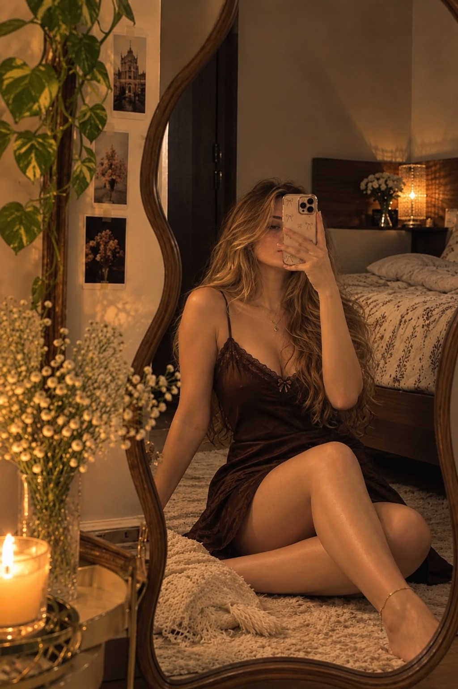
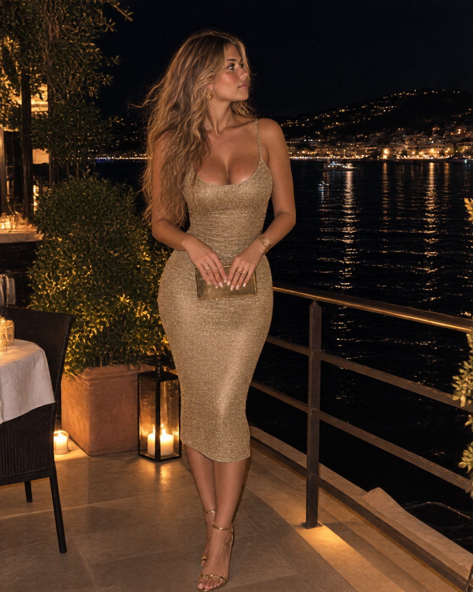
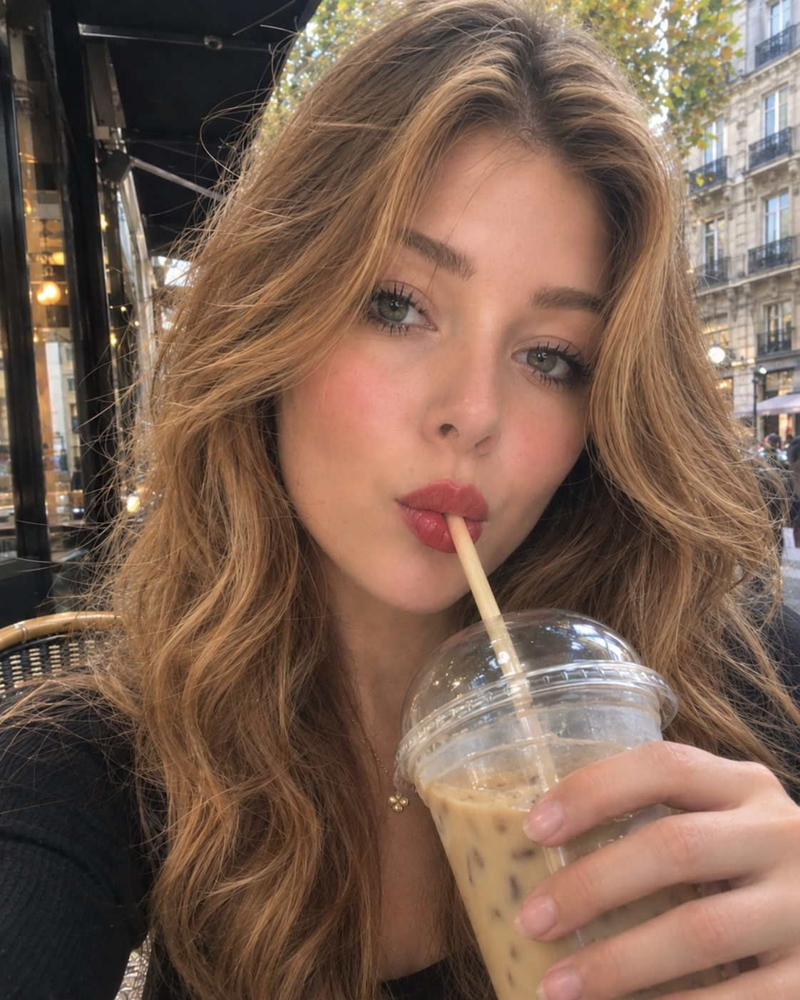
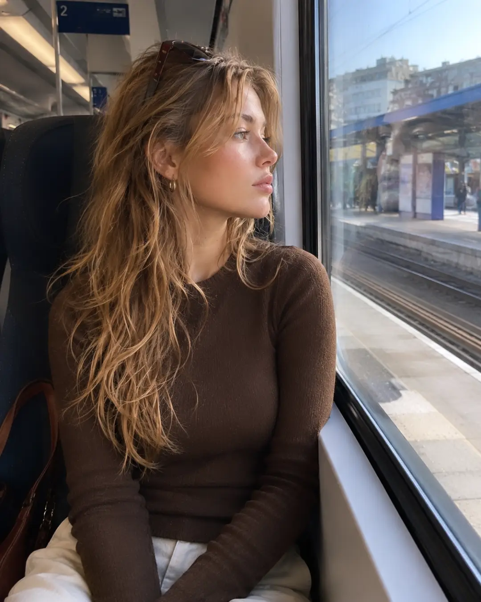
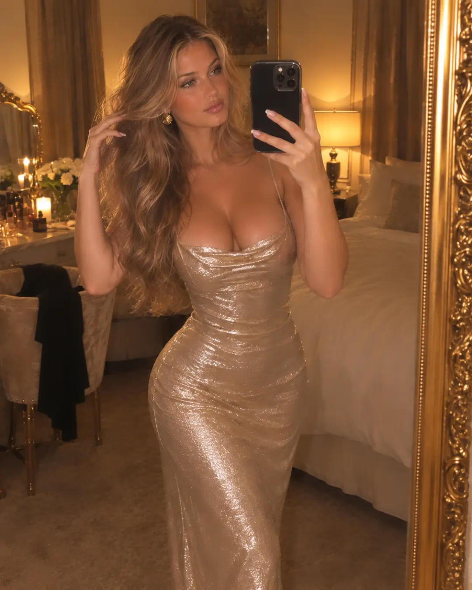
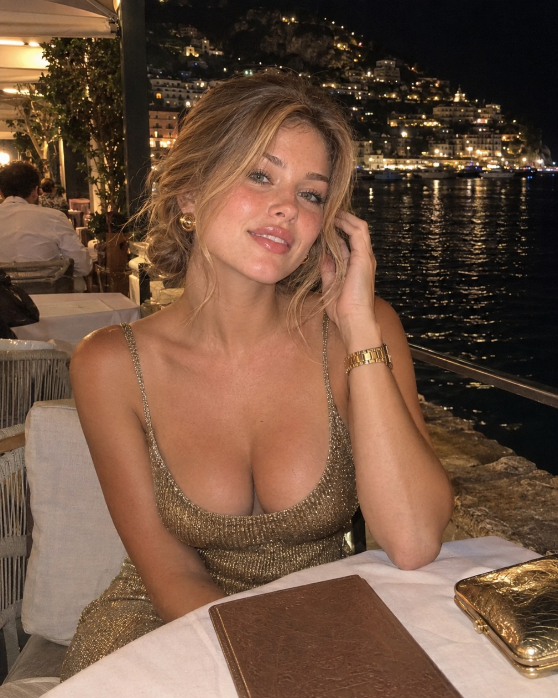

LAURA VALE ✦
Come a little
closer.
You found me… now choose where you want to follow. 😉
Find me ↓18+ • Laura Vale
SCROLL ↓
✦ THE PRIVATE SIDE
You probably shouldn’t have scrolled this far…
This is the side
I don't post everywhere.
Come find me somewhere a little more private. I’m there when you’re ready. 😏
 Come find me on Fanvue 😘
Come find me on Fanvue 😘
18+ • Fanvue creator page
More little moments
Because I never post
just one version.





Still curious?
Good.
So am I. 😏
You know where to find me now.
Come closer on Fanvue 😘
Choose your favorite side of me
Where do you want
to find me?
A little style here. A little flirting there. You know where to look. 😉